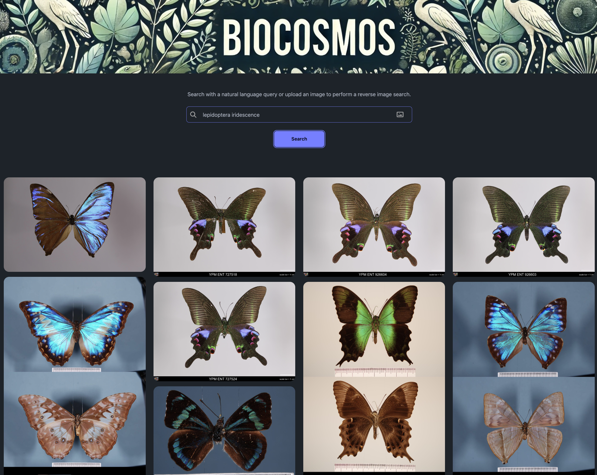
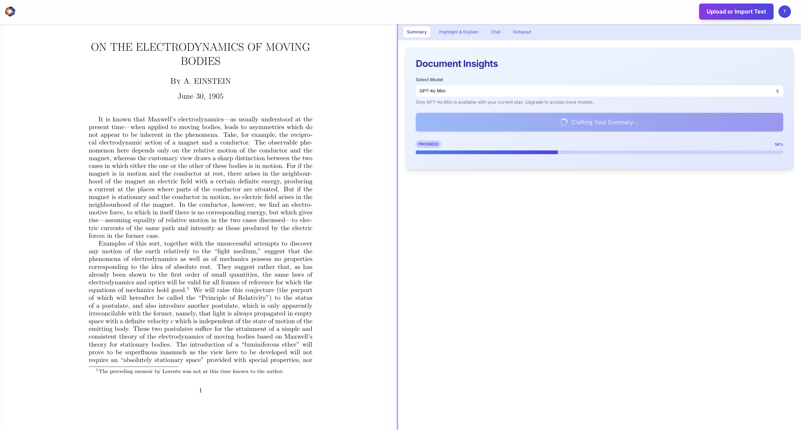
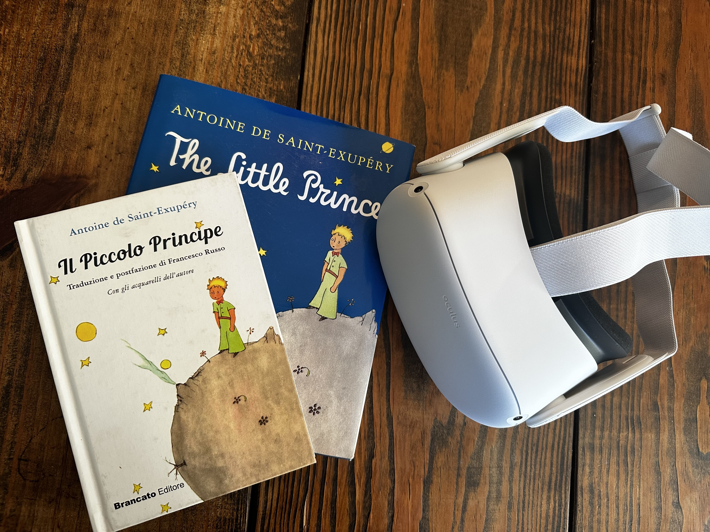
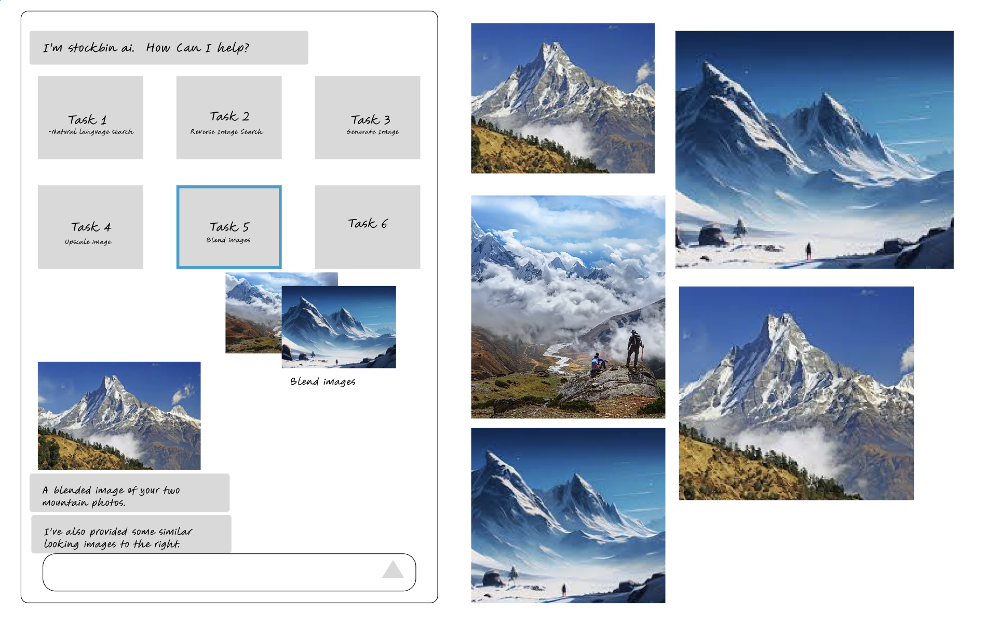

BioCosmos
BioCosmos is a conversational research tool for ecologists and citizen scientists.
Collaboration between the Georgia Institute of Technology and the Florida Museum of Natural History.

ExplainerChonk
transitive verb | \ ˈchȯŋk \
: to chew energetically : champ
ExplainerChonk turns reading into dialogue.

Piccolo
Piccolo is immersive VR language learning through interactive story telling.

Stockbin
Stockbin reimagines stock photography in an era of cheap generative AI.